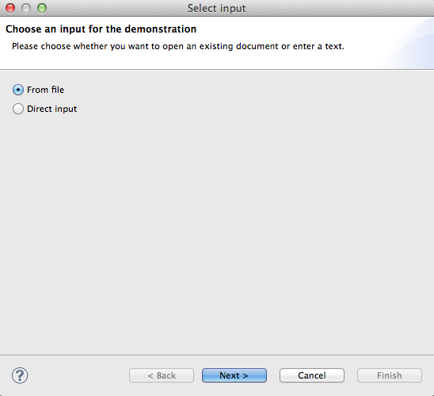
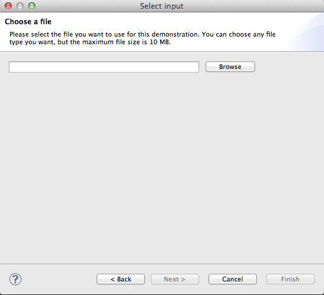
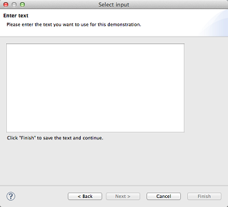
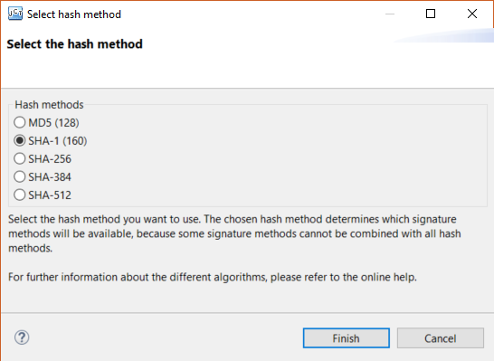
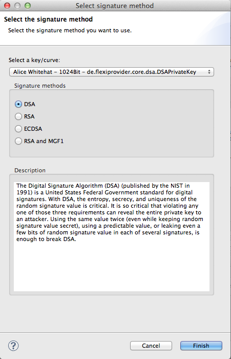
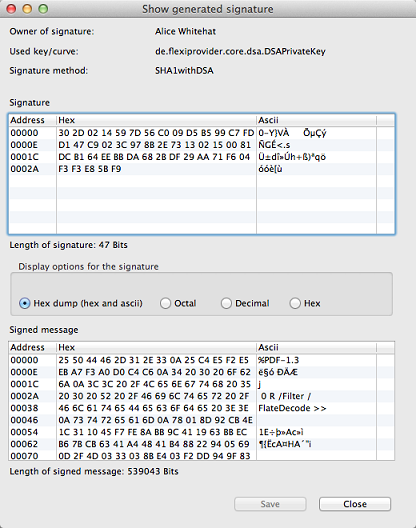

Welcome to the online help of the Signature Visualization plug in.
Below you find an overview of the plug in and a more detailed description of each step of the signature generation.
This visualization demonstrates the creation of a digital signature for a given document (message).
A digital signature can be used to verify the identity of the message's signer.
It also ensures the document's integrity.
The selected hash and signature function are saved. Everything else is reset to the initial state of the plug in.
Everything is reset to the initial state of the plug in, including the selected hash and signature function.
Use the button “Choose input” to start the signature process. Select an existing file or enter a text by yourself. If you want to sign an existing file, you can choose any file type you want. The file size is (approximately) limited by the maximum working memory that JCT is able to acquire.
  The second step of the signature process is to calculate the message digest or hash value of the document. A hash function is an algorithm that maps a data set of variable length (the message) to a data set of a fixed length (hash value or message digest). Signing the hash value rather than the message improves the efficiency of the process because the hash value is usually much smaller in size than the message. The same hash algorithm used by the creator of the digital signature must be used by the verifier of a digital signature.
The MD5 algorithm (published in 1992 and specified in RFC 1321) takes as input a message of arbitrary length and produces as output a 128-bit "fingerprint" or "message digest". The MD5 algorithm is intended for digital signature applications, where a large file must be "compressed" in a secure manner before being encrypted with a private key under a public-key cryptosystem such as RSA.
The “Secure Hash Algorithm“ (published in 1995 by the United States NIST) computes a condensed representation of a message or a data file. When a message of any length < 2⁶⁴ bits is input, the SHA-1 produces a 160-bit output. The SHA-1 is called secure because it was computationally infeasible to find a message which corresponds to a given message digest, or to find two different messages which produce the same message digest. Any change to a message in transit will, with very high probability, result in a different message digest, and the signature will fail to verify.
SHA-256 is one of the successor hash functions to SHA-1 (collectively referred to as SHA-2), and is one of the strongest hash functions available. While SHA-1 has not been compromised in real-world conditions (however in theory), SHA-256 is not much more complex to code. It is recommended to use this method instead of SHA-1.
SHA-384 is like SHA-512, but they differ in the size of the hash value (SHA-384 is truncated). The initial hash is calculated from the 64 decimal bits of the square roots of the consecutive primes (23, 29, etc.). In the end only the first six 64-bit words from the result are used. The attached number indicates the length of each hash value (in bits).
SHA-256 and SHA-512 differ in the word size. SHA-256 uses 32-bit words where SHA-512 uses 64-bit words. The attached number indicates the length of each hash value (in bits).
You can choose between different signature functions to sign the input. Some signature procedures are based on asymmetric encryption like RSA, other methods have been developed only for this purpose, for example DSA.
To sign a file and verify the signature, you need two different keys. The private key is for generating the signature. Only the owner of the key knows it and it has to be kept secret. The public key can be used by anybody else to verify the signature.
To create a signature, you have to select one of the given keys from the Standard-JCT-Keystore.
The Digital Signature Algorithm (DSA) (published by the NIST in 1991) is a United States Federal Government standard for digital signatures. Entropy, secrecy, and uniqueness of the random parameter k are critical for the security of DSA. It is so critical that violating any one of those three requirements can reveal the entire private key to an attacker. Using the same value twice (even while keeping random signature value secret), using a predictable value, or leaking even a few bits of random signature value in each of several signatures, is enough to break DSA.
To learn more about DSA: Visit DSA on Wikipedia
RSA (the algorithm was published in 1977) is an algorithm for public-key cryptography that is based on the presumed difficulty of factoring large integers, the factoring problem. Anyone can use the public key to encrypt a message, but with currently published methods, if the public key is large enough, only someone with knowledge of the prime factors can feasibly decode the message. Secure padding schemes such as RSA-PSS are as essential for the security of message signing as they are for message encryption. The PKCS #1 cryptography standard provides recommendations for the implementation of public-key cryptography based on the RSA algorithm.
To learn more about RSA: Visit JCT-RSA
The Elliptic Curve Digital Signature Algorithm (ECDSA) (proposed in 1992 by Scott Vanstone) is the elliptic curve analog of the Digital Signature Algorithm (DSA). Unlike the ordinary discrete logarithm problem and the integer factorization problem, no sub exponential-time algorithm is known for the elliptic curve discrete logarithm problem. The size of a private key that is considered secure is much smaller with ECDSA. At a security level of 80 bits, meaning an attacker requires the equivalent of about 2^80 signature generations to find the private key, the size of a DSA public key is at least 1024 bits, whereas the size of an ECDSA public key would be 160 bits.
A Mask Generation Function (MGF) is used to generate pseudo random numbers in an arbitrary length. Without knowing the initial value (seed) it is infeasible to predict these random numbers. MGF1, specified in PKCS#1, is a method to archive this goal by using Hash functions like SHA-1. Random numbers are an important part of Public Key Cryptography. Using MGF1 and therefore random Numbers ensure plaintext awareness. Without knowing anything about the plaintext it is basically impossible to generate a valid ciphertext.
To show the signature of the chosen input, click on the button “Show generated signature”. There you see all relevant information about the signature:
To store the signature and the according message in a file, click on "Save". To show the signed file and the generated signature in the hex editor of JCrypTool, use the button “Open in hex editor”.
